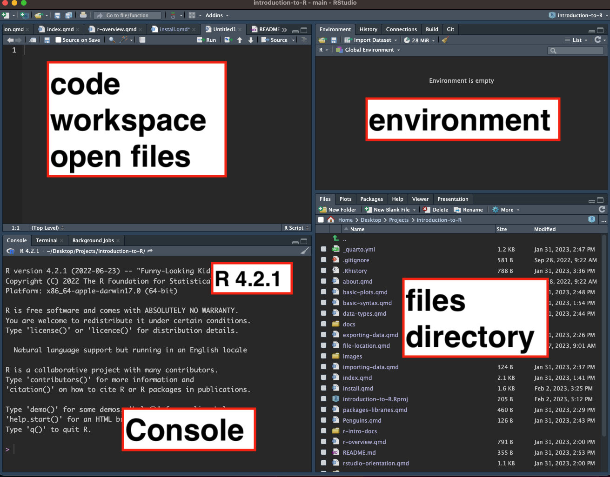

wget https://github.com/shu251/introduction-to-R/tree/main/r-intro-docsInstalling R
There will be office hours or a specific opportunity to follow the below instructions on your own time and seek help. Please do this before the course begins.
You will be emailed the schedule for these office hours.
1 Download R
You can install from the R CRAN page directly. Or visit the PC or Mac specific pages below.
PC: For installing on a PC computer, visit this page.
Mac: For a Mac, visit this page to download to your computer.
The most recent version is 4.2.2, please have any version over 4.0 for this course.
2 Download RStudio
Above, you’ve installed the R programming language to your computer. If you’re in a terminal, you can interact/engage R by typing “R” anywhere. This will launch R, but this is only the consol to type in code. RStudio is a user interface that makes using R more comprehensive.
You should have RStudio version 2022.12.0.
2.1 Alternative instructions for installing R and RStudio
- Video
- Software Carpentry intro to R course
- Additional written instructions
- conda install *Please note that this option has additional steps required and the version currently available through conda is not recent. Try something like this
conda install -c conda-forge r-base=4.1.2
3 Open RStudio
RStudio will be added to your computers Applications or Programs. Open it as you would any other application. You should see a page that looks like this:

4 Download & access workshop content
4.1 Access via terminal
- Navigate to the GitHub associated with this workshop HERE.
- Right click
r-intro-docsand select Copy link. - Navigate to where you want to work via the Terminal and use wget to download the directory.
- Make sure this can be viewed and opened in the ‘files / directory’ pane in RStudio.
or, copy and paste the below line in terminal.
4.2 Via workshop email
- Download attached folder called
r-intro-docs. - Move this to where on your computer you want to work.
- Use the files/directory pane in RStudio to find that folder.